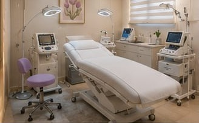
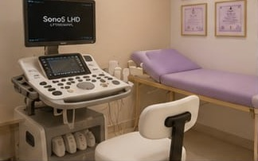

Galería del Consultorio
Un espacio tranquilo, equipado con ecógrafo, láseres, equipo de ozono y centrífuga para PRP.
Área de Evaluación
Ambiente cálido y privado para conversar detalladamente sobre tu historia clínica.

Sala de Procedimientos
Equipada con generador médico de ozono, tecnología láser y estrictos protocolos de bioseguridad.

Área de Ecografía
Ecógrafo de alta resolución para realizar aplicaciones e intervencionismo musculoesquelético guiado.